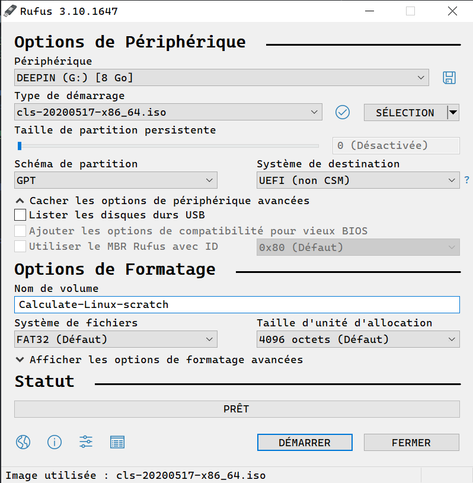

Pour télécharger rufus, il suffit de rendre ici puis de se rendre dans la section
Téléchargement.
Choisisez la version classique, ça ne change rien.
Afin de graver l'iso que vous avez téléchargée ici, commencez par ouvrir rufus en tant qu'administrateur.
Ensuite cliquez sur le bouton "sélection" et indiquez le chemin vers votre iso
Voici un exemple de configuration:
Après quelques minutes, l'iso sera gravée.
Retour à l'acceuil